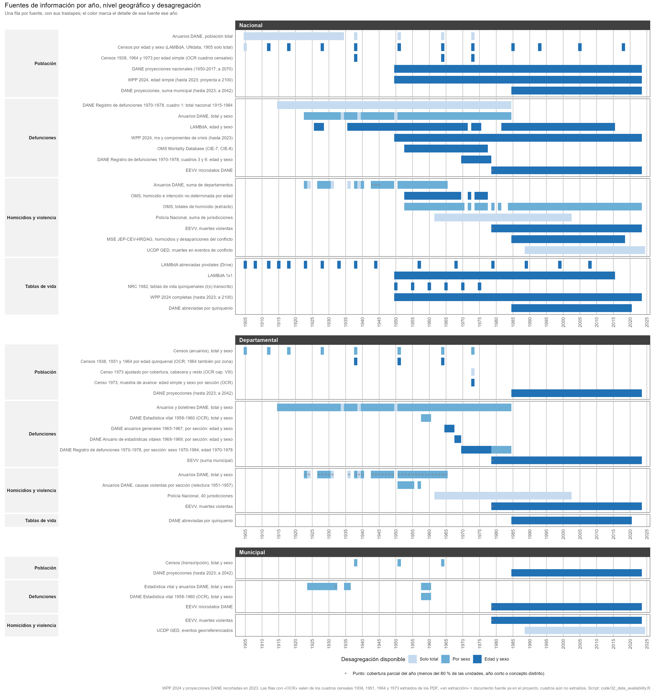

Insumos, intermedios, salidas, scripts y documentos, con el estado de uso de cada dato
2026-11-10
Estado al 2026-11-10. Rutas relativas a la raíz
C:\Users\kikep\gits\colombia_homicidios. El inventario
detallado de las fuentes de mortalidad por nivel geográfico está en
documents/inventario_datos_mortalidad.md; este documento
cubre todo el proyecto y señala qué datos no se están usando todavía
(sección 7).

Dos líneas de trabajo conviven en el repositorio:
run_all.R.run_all.R; se
corre script a script. Los scripts 31-43 lo amplían: insumos WPP e
inventario (31-32), completitud empírica y comparada (33, 36), contraste
con WPP (34-35), reconstrucción poblacional por cohorte-componente
1950-2023 (37-39) y ajuste por componentes con mortalidad de menores de
cinco años de UN IGME y del censo de 1973 (40-43).Además hay un módulo histórico (code/historical/, series
transcritas de anuarios 1915-1984) y un script experimental
(code/experimental/model_spatial.R).
| Carpeta | Contenido | Versionada en git |
|---|---|---|
code/ |
45 scripts R numerados, historical/ (5),
experimental/ (1) |
sí |
data_input/ |
insumos originales (2,9 GB) | solo README.md y los csv pequeños de
historical/ y reference/ |
data_inter/ |
productos intermedios .rds (130 MB) y pruebas
(q_test/, model_variants/) |
no |
output/ |
tablas finales (tables/, 57 csv) y datos compartidos
(csv.gz, parquet, diccionario) |
sí |
figures/ |
101 figuras en 10 subcarpetas | sí |
documents/ |
planes, informes, inventarios, metadatos DANE | sí |
| raíz | README.md, run_all.R,
DESCRIPTION, licencias, Rplots.pdf (residuo,
borrar) |
sí |
data_input/)Columna “Scripts”: número del script que lo lee. “hist/” =
code/historical/. Sin uso marca lo que
ningún script lee.
| Archivo | Contenido | Años | Tamaño | Scripts |
|---|---|---|---|---|
micro/Defun1979.txt … Defun2021.txt,
nofetal2022.csv, nofetal2023.csv (45
archivos) |
microdatos DANE EEVV, defunciones no fetales: municipio de ocurrencia y residencia, sexo, edad, causa (lista 105) | 1979-2023 (sin 1978) | 1,2 GB | 01 |
who_mdb/morticd07.zip, morticd08.zip |
WHO Mortality Database, CIE-7 y CIE-8, todos los países | Colombia 1953-1977 | 10 MB | 21 |
who_mdb/mort_pop.zip,
mort_availability.zip, mort_documentation.zip,
doc/*.pdf |
población OMS, disponibilidad, documentación | 2 MB | sin uso (documentación consultada a mano) | |
historical/lambda_Col_Deaths{m,f}.txt |
LAMBdA, defunciones registradas por edad y sexo | 1926-2015 (76 años) | 48 KB | 21 → 22, 23 |
historical/lambda_Col_Cause19_Deaths{m,f}.txt |
LAMBdA, defunciones por 19 grupos de causa × edad × sexo | 1953-2009 | 168 KB | sin uso |
historical/col_gap_analysis_1920_1985_national_deaths_clean_v03.csv |
totales nacionales por sexo (anuarios DANE) | 1923-1984 | 3 KB | 22 |
historical/col_gap_analysis_1920_1985_department_deaths_clean_v06.csv
(+ _territories_aggregated,
_territories_split) |
defunciones por departamento y sexo, con banderas de calidad y fuente por celda | 1915-1984 | 390 KB | hist/20, hist/21 (variante aggregated) |
historical/col_gap_analysis_1920_1985_municipal_deaths_clean_v03.csv |
defunciones por municipio y sexo, 850 municipios | 14 años entre 1924 y 1960 | 3 MB | hist/20, hist/21 |
historical/dane_vitales_1958_1960_municipal.csv |
DANE “Estadística vital 1958 a 1960”: matrimonios, bautizos (H/M/T), defunciones de menores de un año (H/M/T) y defunciones totales (H/M/T) por municipio, 2.534 municipio-años (2.518 con código DIVIPOLA); 674 de 700 columnas-unidad verificadas contra las filas TOTAL y la tabla departamental | 1958-1960 | 320 KB | hist/24 (produce), 32; sin uso analítico aún |
historical/dane_vitales_1958_1960_departamental.csv |
ídem por sección del país (16 departamentos e intendencias y comisarías agrupadas), con población a mitad de año y tasas publicadas | 1958-1960 | 6 KB | hist/24 (produce), 32 |
historical/vitales_1958_1960_support/ (8 csv) |
correcciones, adiciones y códigos de la lectura anterior; informes
de verificación por columna-unidad, filas TOTAL vs tabla departamental y
diferencias con col_gap_analysis_…_municipal_deaths_v03 (5
municipio-años) |
60 KB | hist/24 | |
dane_pdfs/vitales/LD_558_1958_1960_EJ_2.pdf |
la publicación DANE escaneada (90 pp.), fuente de lo anterior | 1958-1960 | no versionado | hist/24 |
historical/dane_defunciones_1970_1978_cuadro11_secciones_edad.csv,
…cuadro10_menores5_secciones.csv |
DANE, Registro de defunciones 1970-1978: defunciones por sexo y grupo de edad (con detalle de menores de un año) para el país y 24 secciones; menores de cinco años por edad detallada | 1970-1978 | 300 KB | hist/25 (produce); sin uso aún |
historical/dane_defunciones_1970_1978_cuadro06_causas_edad_1973_1978.csv |
ídem: defunciones nacionales por 150 causas, edad y sexo; da causas para 1973 y 1978 y coincide con la OMS en homicidio e intención no determinada 1974-1977 | 1973-1978 | 1,2 MB | hist/25 (produce), 30 (muertes violentas de 1973 y 1978) |
historical/dane_defunciones_1970_1978_cuadro01…,
cuadro02…, cuadro03… |
ídem: total nacional 1915-1984; totales por sexo y sección 1970-1984; nacional por zona, sexo y edad 1970-1978 | 1915-1984 | 45 KB | hist/25 (produce); sin uso aún |
historical/dane_defunciones_1970_1978_support/ (8 csv),
dane_pdfs/vitales/LD_8789_1970_1978_EJ_3.pdf |
correcciones, erratas e inconsistencias de la fuente impresa (112 identidades no cuadran en el original) y verificación; el PDF no se versiona | 22 MB | hist/25 | |
historical/archive_v01_v02/*.csv (6 archivos) |
versión anterior de las transcripciones (2026-10-13) | 1923-1984 | 1,2 MB | archivados, sin uso |
conflict/mse_national_age5_1985-2018.rds |
JEP-CEV-HRDAG, homicidios y desapariciones del conflicto, edad quinquenal × sexo | 1985-2018 | 208 KB | 21 → 23, 27 |
ucdp/GEDEvent_v25_1.csv,
GEDEvent_v25_01_25_12.csv |
UCDP GED, eventos georreferenciados, todos los países | 1989-2025 | 259 MB | hist/22 |
conflict/mse_documented_dept_1985-2018.csv,
conflict/mse_regional_age5_1985-2018.csv |
cachés de 51: víctimas documentadas del conflicto por departamento y
año (media de 10 réplicas de verdata, homicidio y desaparición forzada)
y media de los sorteos MSE por región natural, año, sexo y edad
quinquenal; las réplicas (1,5 GB) y los sorteos están en el repositorio
colombia_bereavement_pdr del Drive |
1985-2018 | 2 MB | 51 |
251208_MortalityCrises.zip |
UN Population Division, mx por tipo de crisis, todos los países (no público) | 1950-2023 | 766 MB | 26 (extrae Colombia) |
reference/wpp2024_crises_colombia_mx1_conflicts.csv,
lt1_crises_free.csv, events.csv,
country.csv |
extracto Colombia de lo anterior | 1950-2023 | 5 MB | 27 |
reference/wpp2024_crises_colombia_mx1_crises.csv,
mx1_disasters.csv, mx1_famine.csv,
mx1_covid.csv, cdr.csv |
extracto Colombia: crisis total, desastres, hambruna, COVID, TBM | 1950-2023 | 1,3 MB | sin uso (extraídos, no analizados) |
reference/who_deaths_age_colombia_1953-1977.csv,
who_violent_age_colombia_1953-1977.csv |
extractos OMS por edad: todas las causas; homicidio + intención no determinada | 1953-1977 | 16 KB | producidos por 21; copias csv de los rds |
reference/who/who_homicide_colombia.csv,
who_all_cause_colombia.csv |
totales anuales OMS (origen externo, sin script productor) | 1953-2019 aprox. | 4 KB | hist/20, hist/22 |
historical/col_gap_analysis_1920_1985_department_homicides_clean_v02.csv |
homicidios por departamento y sexo (anuarios) | 1923-1965 | 80 KB | hist/20, hist/21 |
historical/Homicidio 1962-2002 por depto de Policía_v1.xlsx |
homicidios Policía Nacional, 40 jurisdicciones | 1962-2002 | 20 KB | sin uso |
| Archivo | Contenido | Años | Tamaño | Scripts |
|---|---|---|---|---|
DANEpop/DCD-area-sexo-edad-proypoblacion-Mun-1985-1994.xlsx,
…1995-2004.xlsx, …2005-2017_VP.xlsx |
retroproyecciones municipales DANE por área, sexo y edad simple | 1985-2017 | 137 MB | 03 |
DANEpop/PPED-AreaSexoEdadMun-2018-2042_VP.xlsx |
proyecciones municipales DANE | 2018-2042 | 129 MB | 03, 11, 11b (solo hasta 2023) |
reference/wpp2024_colombia_mx_pop_single_age_1950_2100.rds |
WPP 2024, mx y población por edad simple y sexo | 1950-2100 | 1,8 MB | 22, 23, 24, 25, 27, 28, 29, 30 (sin script productor) |
reference/wpp2024_colombia_pop_single_age_1950-2023.csv |
WPP 2024, población por edad simple y sexo (estimaciones) | 1950-2023 | 1 MB | 31 (produce); sin uso aún |
reference/wpp2024_colombia_fertility_age1.csv |
WPP 2024, tasas de fecundidad por edad simple (ASFR, PASFR, nacimientos) | 1950-2100 | 3 MB | 31 (produce); sin uso aún (insumo para una reconstrucción poblacional) |
census_raw/undata_t22/ (126 páginas html),
undata_t44/ (314) |
caché de UNdata: censos por edad y sexo (t22) y nacidos en el extranjero (t44) | censos 1951-2018 | 36 MB | 21 (solo si falta el csv parseado) |
reference/undata_census_colombia.csv,
undata_foreign_born_colombia.csv |
tablas UNdata parseadas | censos 1951-2018 | 676 KB | 21 → census_pop_age.rds |
historical/lambda_Col_Pop{m,f}.txt |
LAMBdA, población censal por edad | censos 1912-2005 | 6 KB | 21 |
historical/col_gap_analysis_1920_1985_national_population_clean_v02.csv |
población nacional (anuarios y censos) | 1905-1985 | 3 KB | sin uso |
historical/col_gap_analysis_1920_1985_department_population_clean_v03.csv |
población censal por departamento y sexo | censos 1905-1973 | 84 KB | hist/20, hist/21 |
historical/col_gap_analysis_1920_1985_municipal_population_clean_v03.csv |
población censal por municipio y sexo, 881 municipios | censos 1938, 1951, 1964 | 3 MB | hist/20, hist/21 |
migration/undesa_pd_2020_…xlsx,
undesa_pd_2024_…xlsx |
UN DESA, stock de emigrantes colombianos por edad, sexo y destino | 1990-2024 | 12 MB | 21 → 22, 23 |
historical/census_tables/census1938_single_age_sex.csv,
census1973_single_age_sex.csv |
población nacional por edad simple y sexo, censos 1938 (con fila indígena) y 1973 (censada, sin ajuste) | censos 1938, 1973 | 6 KB | hist/23 (produce); sin uso aún |
historical/census_tables/census1951_dept_age5_sex_1938_1951.csv |
población por edad quinquenal y sexo, 15 departamentos, 3 intendencias y 7 comisarías, censos 1938 y 1951 (Cuadro 10 de 1951) | censos 1938, 1951 | 64 KB | hist/23 (produce); sin uso aún |
historical/census_tables/census1964_dept_age5_sex_zone.csv,
census1964_single_age_sex_zone.csv,
census1964_birthplace_by_residence.csv |
censo de 1964: población por edad quinquenal, sexo y zona (total, cabecera, resto) para el país, 17 departamentos, Bogotá D.E., 4 intendencias y 5 comisarías (Cuadro 7); edad simple por sexo y zona, nacional (Cuadro 9); lugar de nacimiento (18 departamentos y D.E., intendencias y comisarías, exterior) por lugar de residencia (20 unidades), sexo y edad 0-14, 15-59 y 60+, la matriz de migración de toda la vida (Cuadro 14; 420 bloques validados, 50 leídos a ojo) | censo 1964 | 180 KB | hist/23 (produce); sin uso aún |
historical/census_tables/census1973_adjusted_population_units.csv |
población ajustada por cobertura 1973 por departamento, D.E., intendencia y comisaría, zona (total, cabecera, resto) y componente (hogares particulares, colectivos, áreas indígenas) | censo 1973 | 5 KB | hist/23 (produce); sin uso aún |
historical/census_tables/census1973_children_ever_born_age.csv,
census1973_children_ever_born_units.csv |
mujeres de 15 años y más por hijos nacidos vivos y sobrevivientes (Cuadros 21 y 21A de 1973): por grupo quinquenal de edad y zona a nivel nacional, y por departamento y zona sin edad; incluye las que no informan y las sin hijos | censo 1973 | 8 KB | hist/23 (produce), 43 |
dane_pdfs/censos/1938/LD_771_1938_V_1.pdf,
dane_pdfs/censos/1951/LD_771_1951.pdf,
dane_pdfs/censos/1964/LD_771_1964.pdf,
dane_pdfs/censos/1973/LB_771_1973.pdf |
resúmenes generales de los censos 1938, 1951, 1964 y 1973; fuente de
census_tables/ (OCR + transcripción validada por sumas,
hist/23). Sin extraer: lugar de nacimiento por departamento de 1964
(Cuadros 13 y 14), cabecera/resto de 1973 por edad, el ajuste de
cobertura 1973 a nivel municipal, la población municipal por sexo de
1973 (Cuadro 1A), las matrices de lugar de nacimiento de 1951 y 1973 y
la edad por zona y departamento de 1951 (Cuadro 11) |
29 MB (no versionados) | hist/23 (solo si run_ocr) |
|
dane_pdfs/censos/1951/LB_771_1951_V_2.pdf,
dane_pdfs/censos/1964/LB_771_1964_V_2.pdf |
censos de edificios y viviendas 1951 y 1964 (no población) | 11 MB | sin uso | |
dane_pdfs/censos/1938/LB_800_1938.pdf (Norte de
Santander), dane_pdfs/censos/1951/LB_811_1951_V_1.pdf
(Huila) |
tomos departamentales | 12 MB | sin uso | |
reference/LAMBdA_documentation.pdf |
documentación LAMBdA | 17 MB | documentación |
| Archivo | Contenido | Años | Scripts |
|---|---|---|---|
lifetables/tablas_utf8.txt |
texto del PDF DANE “Tablas abreviadas de mortalidad nacionales y departamentales 1985-2020” | 1985-2020 | 13 (manual) →
reference/dane_lifetables_nmx_1985_2020.csv |
reference/dane_lifetables_nmx_1985_2020.csv |
nmx abreviadas DANE, nacional y departamental | 1985-2020 | 14, 16, 18, 24, 25, 28 |
historical/lambda_Col_{m,f}ltper_1x1.txt |
LAMBdA, tablas de vida 1x1 | 1950-2015 | 25, 28, 29 |
reference/wpp2024_colombia_lt_complete_1950-2100.csv |
WPP 2024, tablas de vida completas (edad simple) por sexo y ambos sexos, estimaciones y proyección media | 1950-2100 | 31 (produce), 33-43 |
reference/wpp2024_colombia_pop_1jan_single_age_1950-2024.csv |
WPP 2024, población al 1 de enero por edad simple y sexo | 1950-2024 | 37 (produce), 38, 39 |
reference/romero_meisel_2019_violent_deaths_1945_1969.csv |
Romero-Prieto y Meisel-Roca (2019, Banco de la República, Cuadro 1): muertes violentas por sexo estimadas con censos, registro y tablas de vida, total y descontando el nivel de 1945-47 | 1945-1969 | 47 |
reference/unigme2024_colombia_sdmx.csv |
UN IGME 2024 (API SDMX de UNICEF): estimaciones de mortalidad infantil, de 1 a 4 y de menores de cinco años por sexo, y los puntos de cada fuente (censos, encuestas, registro) | 1954-2024 | 41, 42, 43 |
reference/who_causes_age_colombia_1953-1977.csv |
OMS, defunciones por grupos de causa, edad y sexo | 1953-1977 | 40 (produce) |
reference/trussell_child_mortality_coefficients.csv,
coale_demeny_child_q_by_level.csv |
coeficientes de Trussell para k(i) y t(i) (ONU 1983, Manual X,
tablas 47 y 48) y q(1) … q(20) por nivel de las tablas modelo
Coale-Demeny, cuatro familias; tomados del paquete R u5mr
0.1.1 (archivado en CRAN) |
43 | |
I:/My Drive/gits_drive/colombia_bereavement_pdr/data_input/life_tables_lambda.csv
(fuera del repo) |
LAMBdA, tablas abreviadas pivotales | 1905-2008 | 29 |
reference/DIVIPOLA-_Códigos_municipios_20260307.csv |
códigos y nombres de municipios | 2026 | 00, 14 |
documents/Lista_105_Colombia_CIE9-y-CIE10.xls |
lista DANE de 105 causas | 00 |
data_inter/)| Archivo | Lo produce | Lo leen | Contenido |
|---|---|---|---|
micro_1979_2023.rds (40 MB) |
01 | 02, 09, 10, 11, 11b | microdatos limpios, una fila por defunción |
deaths_munic_1979-2023.rds |
02 | 04, 05, 06, 10 | defunciones por municipio × año × sexo × grupo de causa |
deaths_munic_age_1979-2023.rds (45 MB) |
02 | 04, 14, 18, 22, 23, 27, 30 | ídem con edad quinquenal (dx, dx_v) |
pop_munic_1985-2017.rds |
03 | 04, 05, 06, 09, 10, 11, 11b, 14, 18, 23, 24 | población municipal por sexo y edad |
asdr_munic_1985-2017.rds |
04 | nadie | tasas por edad municipales |
homicide_cdr_munic_1985-2017.rds,
sex_ratios_munic_1985-2017.rds |
05 | 07, 15 | panel municipal: tasas de homicidio y razones de sexo |
excess_deaths_munic.rds |
06 | 07, 15 | exceso de mortalidad masculina |
homicide_estimates_1985-2017_excs.rds (16 MB) |
07 | 08, experimental | estimaciones ZINB de homicidios |
sex_ratio_contrib_by_cause.rds |
09 | nadie (solo figuras) | contribución de cada causa a la razón de sexos |
completeness_deptos.rds,
completeness_ggb.rds |
10 | 12, 14, 15, 18 | completitud por departamento (TBM relativa y GGB) |
census_pop_age.rds |
21 | 22, 24 | censos UNdata por edad y sexo |
emigrant_stock_age_1990-2024.rds |
21 | 22 | stock de emigrantes por edad |
lambda_deaths_age_1926-2015.rds,
who_deaths_age_1953-1977.rds,
who_violent_age_1953-1977.rds,
conflict_mse_age5_1985-2018.rds |
21 | 22, 23, 27, 30 | insumos nacionales por edad |
deaths_age_annual_1938-2023.rds,
ddm_census_inputs.rds |
22 | 23, 25, 27 | serie registrada por edad e insumos del DDM |
who_homicide_colombia.rds,
who_all_cause_colombia.rds |
sin script productor | nadie (los csv de reference/who/ los sustituyen) |
totales OMS |
model_variants/oos_scores.rds |
20 | nadie | puntajes fuera de muestra |
model_variants/null.rds,
oos_scores_partial.rds |
sin script productor | nadie | residuos de corridas anteriores |
q_test/*.csv (9) |
10, hist/21 | nadie | pruebas de calidad y sensibilidad |
output/)| Archivo | Script | Contenido |
|---|---|---|
deaths_pop_munic_1985_2023.csv.gz |
11 | año × municipio × sexo: población y defunciones por 6 grupos de causa (87.594 filas) |
deaths_pop_munic_age_1985_2023.parquet |
11b | ídem con edad quinquenal |
deaths_pop_munic_dictionary.md |
11 | diccionario de variables y fuentes |
homicide_estimates_munic_1985_2017.csv.gz |
07/08 (nombre no aparece en el código actual) | estimaciones municipales de homicidios |
output/tables/, 57 csv)| Grupo | Archivos | Scripts |
|---|---|---|
| Completitud departamental | completeness_deptos, completeness_ggb,
completeness_dane, completeness_ddm,
underreg_dept_correlations,
sex_ratio_observed_vs_dane_expected |
10, 12, 14, 18, 19 |
| Modelo municipal | model_completeness_* (2),
model_improvements_* (5), age_placebo_* (3),
residence_vs_occurrence_* (2) |
15, 16, 17, 20 |
| Completitud nacional (DDM) | completeness_ddm_census (+ _annual),
completeness_ddm_conflict (+ _annual),
completeness_wpp_mse_annual |
22, 23, 27 |
| Completitud empírica (Adair y Lopez 2018) | completeness_empirical_national_1979-2023,
completeness_empirical_dept_1985-2023,
completeness_empirical_validation_2014 (modelos 1 y 2, con
y sin defunciones violentas; 5q0 departamental DANE escalada a WPP o
anclada a la ENDS 2015) |
33 |
| Serie nacional ajustada | deaths_expected_wpp_mse_1950-2023,
deaths_by_cause_sex_age_1953-2023,
mx_extended_1905-2023,
lifetables_extended_summary |
27, 29, 30 |
| Comparaciones | pyramids_census_wpp_dane,
mx_wpp_lambda_ours, lifetables_compared (+
_summary) |
24, 25, 28 |
| Inventario | data_availability (nivel, dominio, serie, año, detalle,
cobertura parcial, archivo; una fila por serie y año) |
32 |
| Contraste con WPP 2024 | ours_vs_wpp_annual, e0_gap_decomposition
(descomposición por edad de la brecha en e0) |
34, 35 |
| Completitud comparada | census_correction_factors,
completeness_ddm_census_corrected,
completeness_compared_annual (DDM sobre censos corregidos,
método empírico y lo que implica WPP) |
36 |
| Reconstrucción poblacional 1950-2023 | wpp_net_migration_age_sex_1950-2023,
reconstruction_scenarios_pop_1950-2024,
reconstruction_census_check,
reconstruction_parameters,
reconstruction_completeness_annual,
reconstruction_census_fit,
reconstruction_population_1jan_1950-2024,
reconstruction_population_totals,
reconstruction_population_parameters,
reconstruction_mortality_summary |
37, 38, 39 |
| Componentes y menores de cinco años | deaths_components_registered_1950-2023 (natural, otras
externas, violenta), igme_child_mortality_1950-2023,
child_mortality_brass_census1973 (5q0 hacia 1959-1972 por
Brass-Trussell, nacional, cabecera y resto, cuatro familias y dos
variantes de paridad, con UN IGME y WPP en la fecha de referencia),
child_mortality_census1973_departments (proporción de hijos
fallecidos por departamento y zona como índice de nivel),
mortality_adjusted_components_1950-2023,
mortality_adjusted_old_age_kannisto,
mortality_adjusted_summary (mortalidad ajustada componente
a componente), crisis_deaths_1950-2023 (quinta componente:
pisos de la Policía y de La Violencia sobre las violentas registradas
más el MSE, y Armero 1985) |
40, 41, 42, 43, 47 |
| Ajuste departamental 1985-2023 | dept_mortality_adjusted_components_1985-2023 (tasas por
componente, departamento, sexo y edad, población DANE),
dept_mortality_adjusted_summary (e0, 5q0, 45q15, e60 por
departamento: ajustada, registrada y tablas DANE por quinquenio),
dept_completeness_applied_1985-2023,
dept_vs_national_adjusted_deaths,
mse_departments_1985-2018 (MSE por departamento: homicidios
estimados, violentas EEVV, exceso calibrado, desapariciones),
sexratio_mse_panel_1985-2018 y
sexratio_mse_models (panel y coeficientes de la prueba del
cociente de sexo contra el MSE) |
50, 51, 52 |
| Serie departamental de muertes violentas 1923-2023 | dept_violent_deaths_series_1923-2023 (por unidad y año:
defunciones por sexo, violentas registradas, imputadas y usadas,
Policía, MSE, base, total nacional, nivel calibrado y método),
dept_violent_deaths_causegap_model (coeficientes del modelo
binomial de huecos de causa) |
53 |
figures/)| Carpeta | n | Scripts |
|---|---|---|
01_descriptives/ |
15 | 04 |
02_model/ |
24 | 07, 08, 15, 20 |
03_cause_decomposition/ |
6 | 09 |
04_completeness/ |
28 | 10, 14, 18, 22-30, 33-36 |
05_reconstruction/ |
8 | 37, 38, 39 |
05_underregistration_tests/ |
6 | 12, 16, 17, 19 |
06_components/ |
13 (components_shares,
igme_child_mortality, natural_mortality_model,
old_age_model, adjusted_vs_wpp,
adjusted_variants, child_mortality_census1973,
child_mortality_census1973_departments,
nrc1982_comparison, brass1973_arbitration,
ours_vs_wpp_lexis_ratio,
ours_vs_wpp_rates_by_age, crisis_deaths) |
40-47 |
07_departments/ |
9 (dept_e0_adjusted,
dept_completeness_applied,
dept_components_2000, dept_sum_vs_national,
dept_mse_allocation, sexratio_mse_scatter,
sexratio_mse_series, dept_violent_series,
dept_violent_causegap_fit) |
50, 51, 52, 53 |
historical/ |
6 | hist/20, hist/22 |
inventory/ |
1 (data_availability.png, tile de disponibilidad por
año, nivel y desagregación) |
32 |
experimental/ |
0 |
code/)| Script | Qué hace | En run_all.R |
|---|---|---|
00_setup.R |
paquetes, rutas, lista 105, DIVIPOLA | fuente común |
01_load_microdata.R |
lee los 45 archivos EEVV, armoniza variables | sí |
02_summarise_deaths.R |
agrega por municipio, sexo, edad y grupo de causa | sí |
03_population.R |
lee las proyecciones DANE municipales | sí |
04_descriptives.R |
descriptivos y tasas por edad | sí |
05_municipal_panel.R |
panel municipal: razones de sexo y tasas de homicidio | sí |
06_excess_deaths.R |
exceso de mortalidad masculina | sí |
07_model_zinb.R,
08_model_validation.R |
modelo ZINB de homicidios y validación | sí |
09_sex_ratio_by_cause.R |
descomposición de la razón de sexos por causa | sí |
10_registration_completeness.R |
completitud por departamento (TBM relativa, GGB) | sí |
11_shared_dataset.R,
11b_shared_dataset_age.R |
datos compartidos 1985-2023 | sí |
12_underregistration_test.R |
prueba de la hipótesis de subregistro | sí |
13_extract_dane_lifetables.R |
parsea las tablas de vida DANE del texto del PDF | manual |
14_completeness_dane.R |
completitud frente a las tablas DANE | sí |
15_model_completeness.R |
modelo con completitud como covariable | sí |
16_age_placebo.R, 17_residence.R |
placebo por edad; residencia vs ocurrencia | sí |
18_ddm_completeness.R,
19_completeness_vs_correlation.R |
DDM departamental; completitud vs correlación | sí |
20_model_improvements.R |
variantes del modelo, fuera de muestra, pandemia | no |
21_census_who_inputs.R |
censos UNdata, LAMBdA, OMS por edad y causa, MSE, emigrantes | no |
22_ddm_census_national.R |
serie registrada por edad 1938-2023 y DDM nacional | no |
23_ddm_conflict_adjusted.R |
DDM con numerador corregido por conflicto; referencias WPP/DANE/LAMBdA | no |
24_pyramids_census_wpp_dane.R,
25_mx_wpp_lambda_ours.R |
pirámides y tasas comparadas | no |
26_wpp_crises_inputs.R |
extrae Colombia del zip de crisis de WPP 2024 | no |
27_wpp_conflict_replaced.R |
defunciones esperadas: WPP sin su conflicto + MSE (1985-2018) | no |
28_lifetables_compared.R,
29_mx_extended_back_lambda.R |
tablas de vida por fuente; extensión a 1905 | no |
30_deaths_by_cause_series.R |
serie nacional violenta / no violenta 1953-2023 | no |
31_wpp_lifetables_inputs.R |
extrae Colombia de los csv completos de WPP 2024 (fuera del repo): tablas de vida completas, población y fecundidad por edad simple | no |
32_data_availability.R |
tile de disponibilidad de datos por año, nivel geográfico y
desagregación → figures/inventory/data_availability.png,
output/tables/data_availability.csv |
no |
33_completeness_empirical.R |
completitud empírica del registro de defunciones (Adair y Lopez
2018, PLoS ONE): nacional 1979-2023 y departamental 1985-2023, modelos 1
y 2, con todas las defunciones y sin violentas; validación 2014 →
completeness_empirical_* en output/tables/ y
figures/04_completeness/ |
no |
34_ours_vs_wpp.R,
35_e0_gap_decomposition.R |
estimaciones propias de mortalidad frente a WPP 2024, 1950-2023; descomposición por edad de la brecha en e0 | no |
36_completeness_compared.R |
completitud: DDM sobre censos corregidos por omisión, método empírico y lo que implica WPP | no |
37_reconstruction_ccmpp.R,
38_reconstruction_estimation.R,
39_reconstruction_population.R |
reconstrucción nacional por cohorte-componente 1950-2023: motor, migración neta WPP y escenarios frente a los censos; estimación bayesiana; población dada la mortalidad propia | no |
40_deaths_three_components.R |
defunciones registradas en tres componentes (natural, otras externas, violenta) por sexo y edad, 1950-2023 | no |
41_igme_child_mortality.R |
mortalidad de menores de cinco años de UN IGME, 1950-2023, convertida a m0 y 4m1 | no |
42_mortality_components_adjusted.R |
mortalidad ajustada por componente, sexo y edad, 1950-2023: menores de cinco de UN IGME, natural 5-64 con completitud empírica y suavizado, 65+ con modelo relacional, otras externas y violenta con el faltante del conflicto, más la componente de crisis (47) | no |
43_child_mortality_census1973.R |
mortalidad en la niñez hacia 1959-1972 por Brass (variante Trussell) con los hijos nacidos vivos y sobrevivientes del censo de 1973, nacional y por zona, con corrección de El-Badry; contraste con UN IGME y WPP; índice de nivel por departamento | no |
44_nrc1982_lifetables.R |
tablas de vida NRC 1982 (1950-1975) frente a la serie ajustada, WPP y el registro | no |
45_brass1973_arbitration.R |
arbitraje de la brecha con NRC 1982: Brass del censo 1973 frente a IGME y NRC; descomposición de la brecha en e0 en menores de cinco y 5+ | no |
46_ours_vs_wpp_rates.R |
tasas ajustadas frente a WPP 2024: superficie de Lexis del cociente y tasas por edad en años seleccionados | no |
50_dept_mortality_adjusted.R |
el ajuste nacional por departamento, 1985-2023 (29 unidades, los cinco de la Amazonía agrupados): mismas cinco componentes; completitud Adair-Lopez departamental suavizada y calibrada a la serie nacional; menores de cinco con IGME por el índice departamental de DANE; MSE departamental de 51; Armero en Tolima y Caldas | no |
51_mse_departments.R |
muertes del conflicto (MSE JEP-CEV-HRDAG) por departamento, sexo y edad 1985-2018: media regional de los sorteos del repositorio de duelo por la participación documentada de cada departamento en su región (réplicas de verdata); exceso sobre las violentas EEVV y desapariciones calibrados a la serie nacional del 27 | no |
52_sexratio_mse_calibration.R |
¿el cociente de sexo de la mortalidad registrada ve las muertes del
conflicto que faltan? Panel departamento-año 1985-2018 a las edades
15-49 contra el MSE departamental: no las ve (coeficiente cero frente a
0,25 por muerte registrada); las faltantes no están en el registro. Nota
en documents/notas_calibracion_cociente_sexo_mse.md |
no |
53_dept_violent_deaths_series.R |
serie departamental de muertes violentas 1923-2023 en 29 unidades (territorios como una unidad antes de 1985): nivel del registro (anuarios 1923-1965, EEVV 1979-2023) más las fuentes externas (piso de la Policía 1962-2002, MSE 1985-2018), calibrado al nacional de 42 + 47 desde 1950; el cociente de sexo solo imputa los huecos de causa (modelo binomial mixto; 1966-1978 reescalado al registro nacional). Quita los dobles conteos de los anuarios (territorios listados y en la línea de intendencias, Bogotá dentro de Cundinamarca 1956-1961). Primera versión, sin revisar en detalle | no |
47_crisis_deaths.R |
quinta componente, crisis: pisos de los homicidios de la Policía (1962-2002) y de La Violencia (Romero-Prieto y Meisel-Roca 2019) sobre las violentas registradas más el MSE, y Armero 1985 (WPP/EM-DAT), por sexo y edad | no |
historical/20, 21, 22 |
cobertura y calidad de las transcripciones; UCDP vs OMS | no |
historical/23_census_tables_ocr.R |
tablas censales 1938, 1951, 1964 y 1973 desde los PDF (OCR tesseract
+ transcripción, validadas por identidades) →
historical/census_tables/ |
no |
historical/24_dane_vitales_1958_1960.R |
estadística vital DANE 1958-1960 por municipio y departamento desde
el PDF (capa de texto + dos pasadas de tesseract + transcripción previa,
celda a celda, validadas por H + M = T y filas TOTAL) →
historical/dane_vitales_1958_1960_*.csv; primera corrida
~40 min |
no |
historical/25_dane_defunciones_1970_1978.R |
Registro de defunciones DANE 1970-1978 desde el PDF (capa de texto,
validado por identidades y cruces entre cuadros): defunciones por edad y
sexo por sección del país, menores de cinco años, zona, y 150 causas por
edad y sexo a nivel nacional 1973-1978 →
historical/dane_defunciones_1970_1978_*.csv |
no |
experimental/model_spatial.R |
modelo espacial (exploratorio) | no |
documents/)| Archivo | Fecha | Contenido |
|---|---|---|
report_missing_deaths_caribbean_09_2026.html |
2026-09 | informe: subregistro en el Caribe antes de 1998 |
executive_report_underregistration_10_2026.html |
2026-10 | informe ejecutivo de subregistro |
plan_cleanup_and_underregistration.md,
HANDOFF_plan_A_execution.md |
2026-10-13 | evaluación del repositorio, plan de limpieza (Plan A) y de subregistro (Plan B) |
datos_mortalidad_colombia_03_2026.xlsx |
2026-03 | inventario anterior de variables y lagunas |
inventario_datos_mortalidad.md (+
.html) |
2026-11-10 | fuentes de mortalidad por nivel geográfico, con el tile de disponibilidad y la lista de información complementaria |
inventario_general_proyecto.md (+
.html) |
2026-11-10 | este documento |
Lista_105_Colombia_CIE9-y-CIE10.xls |
lista DANE de causas | |
metadata/ |
diccionarios EEVV 1979-2016, variables de microdatos, manual de certificación, glosario |
Ordenados por lo que aportarían.
| Dato | Qué aportaría | Esfuerzo |
|---|---|---|
Tablas censales extraídas
(historical/census_tables/, hist/23) |
ya extraídas y validadas, sin explotar: edades simples nacionales 1938 y 1973 (preferencia de dígitos, DDM con edad simple); edad quinquenal por departamento 1938, 1951 y 1964, el último también por zona (completitud departamental intercensal con las defunciones 1915-1984 y, desde 1970, con las defunciones por edad del Registro de defunciones 1970-1978); edad simple nacional por zona en 1964; matriz de lugar de nacimiento por lugar de residencia en 1964 (migración de toda la vida entre departamentos, por sexo y tres grupos de edad, para corregir la población departamental por migración); población ajustada por cobertura 1973 por departamento (omisión 9,8 % nacional, muy desigual por territorio) | bajo: lectura directa |
| Hijos nacidos vivos y sobrevivientes, censo 1973: nivel departamental | el script 43 ya estima el 5q0 nacional y por zona (111 por mil hacia 1967,6; rural 1,3 a 1,5 veces la cabecera) y reproduce la serie indirecta de UN IGME. Por departamento solo hay un índice sin edad, que en la costa Caribe queda por debajo del resto a igual mortalidad posterior. Una estimación departamental exige los hijos por edad de la madre: muestra IPUMS del censo de 1973 | bajo con IPUMS |
| Resúmenes censales 1951, 1964 y 1973: lo que falta | 1964: solo falta el Cuadro 13 (nacidos en el mismo departamento, en otros y en el exterior, por unidad de residencia, sexo y zona; pp. 45-48), tipográfico y con el mismo método; sirve para comprobar la diagonal del Cuadro 14, ya extraído. 1973: cabecera/resto por edad simple (Cuadro 2), ajuste de cobertura por municipio (capítulo VIII, ~1.000 filas), población por sexo y municipio (Cuadro 1A), lugar de nacimiento por lugar de empadronamiento (Cuadro 4A). 1951: lugar de nacimiento por departamento (Cuadro 15), edad quinquenal por zona y departamento (Cuadro 11), menores de un año por meses de edad (Cuadro 12) | 1973 alto: el escaneo no admite OCR, transcripción manual; 1951 medio: el OCR del Cuadro 10 ya funciona en ese formato |
| Tablas WPP 2024 nuevas (31): tablas de vida completas, población y fecundidad por edad simple | insumos para una reconstrucción poblacional 1938-2023 (cohorte-componente bayesiano) y para comparar la mortalidad propia con la tabla completa de WPP | bajo |
| LAMBdA, 19 grupos de causa 1953-2009 | mortalidad por causa con edad y sexo para 1978 (año sin EEVV) y cotejo independiente de la serie violenta de OMS y EEVV 1953-2009 | bajo: lectura directa |
| Homicidios Policía Nacional 1962-2002 por departamento | única fuente departamental de homicidios 1966-1978; calibración del concepto policial frente a anuarios (1962-65) y EEVV (1979-2002) | bajo |
| Estadística vital DANE 1958-1960 por municipio (hist/24) | defunciones municipales por sexo verificadas para tres años, mortalidad infantil municipal (única antes de 1979) y bautizos como aproximación a los nacimientos; corrige cinco municipio-años de la transcripción anterior | bajo: lectura directa |
| Transcripciones nuevas sin explotar analíticamente: defunciones departamentales 1915-1984, municipales 1924-1960, homicidios departamentales 1923-1965 | solo se usan para figuras de cobertura y pruebas de calidad (hist/20-21) y para el total nacional de 22; permitirían completitud departamental antes de 1979 (con los censos 1938-1973) y tasas municipales de los años 20-50 | medio: requiere población interpolada y armonización territorial |
| Población nacional anuarios 1905-1985 | contraste con WPP y censos para 1905-1950 | bajo |
| Componentes de crisis WPP distintos del conflicto (desastres, hambruna, COVID, TBM) | ya extraídos; la COVID importa para 2020-2023 si se quiere separar exceso pandémico de la serie no violenta | bajo |
| UCDP GED | solo comparado con OMS a nivel nacional; tiene geolocalización por evento (municipio) 1989-2024 que no se ha cruzado con el panel municipal | medio |
| Proyecciones DANE 2024-2042 | fuera del alcance actual | ninguno |
Población OMS (mort_pop.zip) |
redundante con WPP | ninguno |
| Tomos departamentales 1938 (Norte de Santander) y 1951 (Huila) | edad por municipio en dos departamentos; sin interés salvo como prueba de método | bajo |
| Censos de vivienda 1951 y 1964 | no contienen población por edad | ninguno |
Productos intermedios que nadie lee:
asdr_munic_1985-2017.rds (tasas por edad municipales, 5
MB), sex_ratio_contrib_by_cause.rds,
model_variants/oos_scores.rds y todo q_test/.
No es un problema, pero model_variants/null.rds,
oos_scores_partial.rds y los rds
who_*_colombia.rds no tienen script productor y conviene
borrarlos o documentar su origen.
dane_defunciones_1970_1978_*).historical/census_tables/.